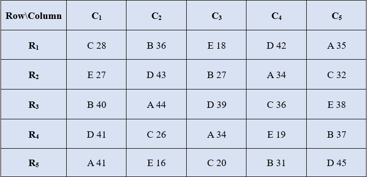

19 Single factor experiments
Experiments in which only a single factor varies while all others are kept constant are called single-factor experiments. In such experiments, the treatments consist solely of the different levels of the single variable factor. All other factors are maintained uniformly in all other experimental units.
Example:
An experiment to find out the best nitrogen level for getting high yield, where 5 different nitrogen levels are tested. Here nitrogen levels are the treatments all other factors like irrigation, light, fertility gradient will be assumed to be homogenous in all experimental units (here plots are the experimental units).
An experiment to find out the best feed formulation for milk yield in cows from 4 feed formulas. Here feed formula is the only factor which varies with 4 levels. All other factors like breed of cow, age etc will be kept constant.
19.1 Completely Randomized Design (CRD)
Completely Randomized Design is the basic single factor design. In this design the treatments are assigned completely at random so that each experimental unit has the same chance of receiving any one treatment. CRD is only appropriate for experiments with homogeneous experimental units, such as laboratory and green house experiments, where environmental effects are relatively easy to control. For field experiments, where there is generally large variation among experimental plots, CRD is rarely used.
CRD provides a layout for conducting experiments, when experimental units are homogeneous. Only two basic principles of design, randomization 15.8.1 and replication15.8.2 are followed in CRD. Local control15.8.3 is not required as all the experimental units are homogeneous. Treatments can have unequal replications in CRD
19.1.1 Randomization procedure
Consider an experiment involving four treatments A, B, C, D in CRD. Each treatment is replicated 5 times. Randomization procedure is as explained below.
Determine the total number of experimental units (\(n\)) as the product of the number of treatments (\(t\)) and the number of replications (\(r\)); that is, \(n = r\ \times t\). For our example, \(n = 5 \times 4 = 20\)
Assign a unit number to each experimental units in any convenient manner; for example, consecutively from 1 to n. For our example, the unit numbers 1, ... , 20 are assigned to the 20 experimental units as shown in Figure 19.1
Assign the treatments to the experimental plots by using any randomization schemes. Here we explain a simple randomization scheme in section 19.1.1.1.

Figure 19.1: Numbered experimental units
19.1.1.1 Randomization by drawing lots
Prepare \(n\) identical pieces of paper and divide them into \(t\) groups, each group with \(r\) pieces of paper. Label each piece of paper of the same group with the same letter (or number) corresponding to a treatment. Uniformly fold each of the \(n\) labeled pieces of paper, mix them thoroughly, and place them in a container. For our example, there should be 20 pieces of paper, five each with treatments A, B, C, and D appearing on them.
Draw one piece of paper at a time, without replacement and with constant shaking of the container after each draw to mix its content. For our example, the label and the corresponding sequence in which each piece of paper is drawn. The sequence number can be considered as the experimental unit number to which the treatment is to be assigned.

Figure 19.2: Sequence in which labelled lots are drawn
19.1.2 Layout of CRD
After allotting the treatment according to the randomization procedure explained in section 15.8.1. The final layout will look like in the figure 19.3.

Figure 19.3: Layout of Completely Randomized Design
19.1.3 Statistical model for CRD
Consider a CRD with v treatments with r replications. Statistical model for CRD is same as that of one-way ANOVA (17.6.1.5).
\[Y_{\text{ij}} = \mu + \tau_{i} + e_{\text{ij}}\]
Where i = 1,2, …, v and j =1,2, …, ri. \(Y_{\text{ij}}\) is the observed value of ith
treatment from jth replication, \(\tau_{i}\) is the effect of ith treatment. \(\mu\) is the general
effect which is common for all treatments. \(e_{\text{ij}}\) is the error
effects.\(e_{ij}\) \(\sim iid\ N(0,\sigma^{2})\)
19.1.4 Analysis of CRD
Analysis of CRD is same as that explained in section 17.6.1.5 of one-way ANOVA.
Note that unequal replication (i.e. each treatment can have different replication) is possible in CRD. So while calculating TSS, each treatment total square is divided by corresponding replication and then sum is taken. If the replication is same for all treatments, to calculate TSS take sum of all the squares of treatment total and then divide it by replication.

Figure 19.4: ANOVA table of CRD
19.1.4.1 Post hoc test (LSD)
If the null hypothesis is rejected in ANOVA; we proceed to post-hoc test explained in section 18.2 . Fisher’s Least significant difference (LSD) test explained in section 18.2 is the commonly employed test in agricultural experiments.
Arrange the treatment means in descending order. Critical difference (CD) is calculated for each treatment pair \(T_{i},\ T_{j}\) using the following formula.
\[C.D. = t_{\left( \frac{\alpha}{2},\ \ \ error\ df \right)}\sqrt{\text{MSE}\left( \frac{1}{r_{i}} + \frac{1}{r_{j}} \right)}\] (for CRD with unequal replication)
\[C.D. = t_{\left( \frac{\alpha}{2},\ \ \ error\ df \right)}\sqrt{2MSE/r}\] (for CRD with equal replication)
Here \(t_{\left( \frac{\alpha}{2},\ \ \ error\ df \right)}\) denotes the critical value of Student’s t for a two tailed test at α level of significance and error degrees of freedom. \(r_{i}\) and \(r_{j}\) are replications of \(T_{i},\ T_{j}\) respectively. If the difference of any two treatment means is greater than the critical difference, they are significantly different. If the difference of any two treatment means is less than \(\text{C.D}\). they are said to be on par. (i.e., there is no any statistically significant difference). Those treatments which are at par is given same symbols or letters, such that treatment means without any common letters or symbols are significantly different at corresponding level of significance (α).
19.1.5 Advantages of a CRD
Its layout is very easy.
There is complete flexibility in this design i.e. any number of treatments and replications for each treatment can be tried.
Whole experimental material can be utilized in this design.
This design yields maximum degrees of freedom for experimental error.
The analysis of data is simplest as compared to any other design.
Even if some values are missing the analysis can be done.
19.1.6 Disadvantages of a CRD
Not suitable for field experiments
Relatively low accuracy due to lack of local control. Completely homogeneous experimental units are practically difficult in many situations.
19.1.7 Number of replications in CRD
An experimenter is free to choose any number of replications in the experiment. The precision in estimating experimental error variance increases as the number of replications increases. But the design should be such that the number of replications should be optimum, since increasing the replications will increase the experiment cost. So, there is a rule of thumb that says, error degrees of freedom should be at least 12 to keep type II error in check. One can easily find the number of replications required in a design by using the formula for error degrees of freedom of that design.
Example
You have 5 treatments; you are planning to conduct the experiment in CRD. Find the minimum number of replications required.
Formula for error degrees of freedom (edf) in CRD is \(n - t\); where \(n\) is the total number of experimental units and \(t\) is the number of treatments. \(n = rt\), \(r\) is the number of replications.
edf should be \(\geq\) 12
edf \(= n - t = rt - t = t\left( r - 1 \right) \geq 12\)
Since t = 5, edf \(= 5\left( r - 1 \right) \geq 12\)
\(= r \geq 3.4\), Since \(r\) cannot be a fraction \(r =\) 4
The number of replications required in 4
Why minimum error degrees of freedom required for a design is 12
The error degrees of freedom have a major role in deciding the critical value of F. You can see from the table of F in section 20 as the error degrees of freedom or the degrees of freedom in the denominator decreases F tends to have larger values, this inflates type II error, i.e. we will be able to reject the null hypothesis only if there is a considerable difference between the treatments (higher Treatment Sum of Square). But towards 12 degrees of freedom in the denominator the F values stabilize for further increase in degrees of freedom.
19.1.8 Example
In order to find the yielding abilities of five varieties of sesame an experiment was conducted in the green house using a CRD with four pots per variety. The results are given in the following table below.

Figure 19.5: ANOVA table of CRD
19.1.8.1 Solution
Correction Factor:
\(= \frac{G^{2}}{n} = \frac{\left( 397 \right)^{2}}{20}\)=7880.45
Total Sum of squares:
\(= \left( 25^{2} + 21^{2} + .... + 11^{2} \right) - CF\)
\(= 8307 - CF = 426.55\)
Treatment Sum of Squares:
\(\frac{1}{4}(85^{2} + 102^{2} + ... + 53^{2}) - CF\)
\(= 8211.75 - CF = 331.30\)
Error Sum of Square:
\(426.55 - 331.30 = 95.25\)
Figure 19.6: ANOVA table of CRD
Since the F value calculated is greater than table value of F, we can reject the null hypothesis and conclude that there is a significant difference between atleast a pair of treatments. So in order to find, which treatments are significantly different, we perform Fisher’s LSD test.
\[\text{CD} = t_{\frac{\alpha}{2}}\sqrt{\frac{\text{2xMSE}}{r}} = \text{2.131}\sqrt{\frac{2\left( \text{6.350} \right)}{4}} = (\text{2.131})(\text{1.7819}) = \text{3.797}\text{2}\]
\(t_{0.025\text{ at }15 \text{ edf}} = 2.131\) (Just look for the critical value of t for a two tailed test at α= 0.05 in the statistical table. (see section 20. It is shown as \(t_{\frac{\alpha}{2}}\) , since it is a two tailed test in the one side of the t-distribution curve the probability will be \(\frac{\alpha}{2}\), so that combined probability is α.)
Treatment means arranged in descending order. Those treatment pairs whose difference in means is greater than C.D. is labelled with a different letters.
| Treatments | means | Grouping using alphabets |
|---|---|---|
| V2 | 25.5 | a |
| V1 | 21.5 | b |
| V3 | 21.5 | b |
| V4 | 18 | b |
| V5 | 13.5 | c |
In the above table we can see that difference between mean of V2 and V1 is 4 which is greater than C.D. value. So V2 and V1 are significantly different; different letters are assigned to each of them. Instead of letters one can also use symbols as shown below. Those treatments with same letters/symbols are not significantly different.
| Treatments | means | Grouping using symbols |
|---|---|---|
| V2 | 25.5 | @ |
| V1 | 21.5 | * |
| V3 | 21.5 | * |
| V4 | 18 | * |
| V5 | 13.5 | & |
So, in our example we can conclude that V2 is the best variety because, it is having the highest mean and is significantly different from others.
Note: in some cases, more than one alphabets can appear against a treatment mean, see the hypothetical example below.

Figure 19.7: A hypothetical example of treatment grouping
If a lettering like this appears meaning is that those treatments having common alphabets are not significantly different. In the above table V2 and V1 is not significantly different as both of them are having common letter a. At the same time you can see V5 and V4 is significantly different as they don’t have any common letters.
19.2 Randomized Complete Block Designs (RCBD)
In field experiments, the plots on which treatments are applied may not be uniform and there may be difference in plot-to-plot fertility. In such cases CRD cannot be recommended. If there is only one source constitutes the difference between the plots then we can recommend randomized block design.
The randomized complete block (RCB) design is one of the most widely used experimental designs in agricultural research. The design is especially suited for field experiments where the number of treatments is not large and the experimental area has a predictable fertility gradient.
When the experimental material is heterogeneous, the experimental material is grouped into homogeneous sub-groups called blocks. As each block consists of the entire set of treatments a block is equivalent to a replication. For example, in a field with known fertility gradient in one direction, plots perpendicular to this gradient will be considered as a block. In RCBD (Randomized Complete Block Design) blocks are of equal size and contains all the treatments. Since the block contains all the treatments, the term ‘complete block design’ is used. See figure @ref(fig: field) and @ref(fig: field2) to see how blocks are formed in a field.
In RCBD number of replications, \(r\) = number of blocks
Number of plots within a block = number of treatments, \(v\)
19.2.1 Blocking technique
Blocking or local control, one of the basic principles of design is effectively implemented in RCBD. The primary purpose of blocking is to reduce experimental error by eliminating the contribution of known sources of variation among experimental units. This is achieved by grouping homogeneous units together, so that variability with in blocks is minimized, between blocks is maximized.
Two important factors to be considered for blocking
The selection of the source of variability to be used as the basis for blocking, in field experiments usually fertility gradient or productivity gradient is used as the identified source of variability.
Proper selection of the block shape and orientation. For example, When the gradient is unidirectional use long and narrow blocks. Use square blocks for strong fertility gradient in both directions. An experimenter should use his common sense to identify the shape and orientation of the block after examining the field conditions, suc that plots in a block are homogeneous.
19.2.2 Randomization in RCBD
Consider an experiment involving four treatments A, B, C, D in RCBD. Each treatment is replicated 5 times. Randomization procedure is as explained below. The randomization process for a RCB design is applied separately and independently to each of the blocks.
STEP 1. Divide the experimental area into \(r\) equal blocks, where \(r\) is the number of replications. In our example \(r =\) 5.
Figure 19.8: Division of an experimental field into five blocks, each consisting of four plots, for a RCBD with four treatments and five replications. Blocking is done such that blocks are rectangular and perpendicular to the direction of the unidirectional fertility gradient
STEP 2. Subdivide each block into \(v\) experimental plots, where \(v\) is the number of treatments. Number the \(v\) plots consecutively from 1 to \(v\), and assign \(v\) treatments at random to the \(v\) plots following the randomization scheme for the CRD described in Section 19.1.1.1. In our example each of the 5 blocks are divided into 4 plots. Plots are numbered 1 to 4 in each block. Now for each block, paper lots of 1 to 4 is prepared. Treatment names are written in order and plot number from each lot is recorded in order as shown below.
| Treatments | A | B | C | D |
|---|---|---|---|---|
| Plot number form lot | 2 | 1 | 4 | 3 |
STEP 3. All the treatments are allotted to the randomly selected plots. Step 2 is repeated in all blocks.
Figure 19.9: Allotment of treatments in all blocks. In RCBD each block will have all the treatments and each treatment appear in a block exactly once.
19.2.3 Layout of RCBD
In RCBD each block will have all the treatments and each treatment appear in a block exactly once. After allotting the treatment according to the randomization procedure explained in section 19.2.2. The final layout will look like in the figure 19.10.
Note:
In RBD every treatment will have the same number of replications. (All treatments are equally replicated say, \(r\) times). So we need a total of \(v\) \(\times\) \(r\) plots for conducting that experiment. Each of \(r\) blocks will be containing \(v\) plots. So in this design, the number of blocks = number of replication of the treatments = \(r\) and number of plots within a block = number of treatments = \(v\)
Figure 19.10: Layout of RCBD with four treatments and five replications
19.2.4 Statistical Model for RCBD
Consider a RCBD with \(v\) treatments with \(r\) replications (Blocks). Statistical model for RCBD is same as that of two-way ANOVA described in section 17.6.2.1.
\[Y_{\text{ij}} = \mu + \tau_{i} + \gamma_{j}+ e_{\text{ij}}\]
Where i = 1,2, …, v and j =1,2, …, r. \(Y_{\text{ij}}\) is the observed value of response under ith treatment and jth block, \(\tau_{i}\) is the effect of ith factor,\(\gamma_{j}\) is the effect of jth block . \(\mu\) is the general
effect which is common for all treatments. \(e_{\text{ij}}\) is the error
effects.\(e_{ij}\) \(\sim iid\ N(0,\sigma^{2})\)
19.2.5 Analysis of RCBD
Analysis of RCBD is same as that explained in section 17.6.2.3 of two-way ANOVA.
Observation from \(v\) treatments in \(r\) blocks is arranged as shown below.
Figure 19.11: Two-way arrangement of observations in RCBD
Figure 19.12: ANOVA table of RCBD
F1 ~ F (\(v\)–1), (\(v\)–1)(\(r\)–1) and F2 ~ F ~(\(r\)–1), (\(v\)–1)(\(r\)–1) are two F values one for Treatment and one for blocks respectively. Decisions on the null hypothesis is made by comparing corresponding F value to the table value as explained in section 20.
What if F2 is not significant If F2 is not significant, it indicates that there is no significant difference between blocks, means blocking is not effective. Blocking is considered effective in reducing the experimental error if F2 is significant.
19.2.6 Number of replications in RCBD
As explained in section 19.1.7 number of replications is RCBD is found out using the formula of error degrees of freedom (edf).
Example
You have 4 treatments; you are planning to conduct the experiment in RCBD. Find the minimum number of replications required.
Formula for error degrees of freedom (edf) in RCBD is \((v - 1) (r-1)\); where \(v\) is the number of treatments and \(r\) is the number of blocks.
edf should be \(\geq\) 12
edf \(=(v - 1) (r-1) \geq 12\)
Since \(v\) = 4, edf \(= 3\left( r - 1 \right) \geq 12\)
\(\implies r \geq 5\), minimum replication required is 4
The number of replications required in 4
19.2.7 Post-hoc test in RCBD
If the null hypothesis for treatments is rejected in ANOVA; we proceed to post-hoc test explained in section 18.2. Arrange the treatment means in descending order. Critical difference (CD) or LSD (Least Significant Difference) is calculated for each treatment pair \(T_{i},\ T_{j}\) using the following formula.
\[CD = \ t_{\frac{\alpha}{2},edf}.\sqrt{\frac{2\ MSE}{r}}\]
Where, \(\text{MSE}\) is the Mean Square Error from ANOVA.
\(t_{\frac{\alpha}{2},edf}\) is the critical value of two tailed student’s t distribution at \(\alpha\) level of significance and error degrees of
freedom.\(r\) is the number of blocks/replication.
Procedure for grouping using symbols is same as that of CRD explained in section 19.1.4.1.
19.2.8 Advantages of RCBD
Accuracy: RCB design has been shown to be more efficient or accurate than C.R.D. for most types of experimental work.
Flexibility: In RCBD no restrictions are placed on the number of treatments or the number of replicates.
Even if some values are missing, still the analysis can be done by using missing plot technique
Ease of analysis: Statistical analysis is simple, rapid and straight forward.
19.2.9 Disadvantages of RCBD
RCBD may give misleading results if blocks are not homogeneous
RCBD is not suitable for large number of treatments because in that case the block size will increase and it may not be possible to keep large blocks homogeneous.
If the data on more than two plots is missing the statistical analysis becomes tedious and complicated.
19.3 Latin Square Design (LSD)
In this design, variations in the field in two different directions ( or variations due to two different factors) are controlled simultaneously from affecting the treatment comparisons. A layout in RBD controls only one source of external variation affecting the treatment comparisons by the construction of homogeneous blocks. Sometimes when blocks were laid out in a field the environmental conditions within each block need not be the same. For example, soil variability in a North South direction and an environmental gradient in an East West Direction then the conditions within each block will vary. In such situations the variability can be controlled by a Latin Square design (LSD). The blocks in a LSD are called rows and columns; they represent two external factors. The entire experimental area can be divided into small plots arranged in the form of a square. The number of plots in each row and each column are equal, both equal to the number of treatments to be compared.
19.3.1 Layout and Randaomization
A Latin square of \(v\) treatments ( usually called as side \(v\)) is an arrangement of \(v\) treatments into \(v\) rows and \(v\) columns such that every treatment is replicated in each row and each column exactly once.
Latin squares of various sides are available in Statistical tables. If there are v treatments to be compared, chose a Latin square of side v from the statistical tables. In the Fisher and Yates (1948) Tables for Statisticians and Biometricians these squares are presented for a given standard order of alphabets in the first row. Choose one of these squares for a given \(v\) and carryout the randomization in the following way.
Let \(v\) = 6. Then a Latin Square of 6 treatments denoted by A, B, C, D, E and F can be denoted by keeping alphabetical order for first row and an order of symmetry for the remaining rows can be written as
Figure 19.13: Layout of LSD with six treatments and six replications
This square represents a Latin square for \(v\) = 6 treatments in 6 replications. Blocks are represented in two directions as rows and columns and their number is also = \(v\)
Randomization
If there are \(v\) treatments take a square of order \(v\) at random
from the Statistical tables.
Number the rows of the square from 1 to \(v\). Keeping the first row fixed, the remaining rows are arranged randomly by using random numbers to develop another square. ( So the above square can be randomised in many ways like
Figure 19.14: Randomization of LSD with six treatments and six replications
After the randomisation of the rows the columns are randomised to get another randomized square.
Figure 19.15: Randomization of LSD
Lastly , the \(v\) treatments can be assigned randomly to these \(v\) letters (A, B, …).
19.3.2 Analysis
The data collected from experiments in LSD are classified according to the levels of three factors. So it is called three way classified design. The two types of blockings (Rows and columns) and treatments will make up the three factors. The linear model for analysis as : \[Y_{\text{ij}} = \mu + \tau_{i} + R_{j}+ C_{k}+e_{\text{ijk}}\] where i,j, k = 1,2,3,… \(v\)
i.e. The response ( yield \(y_{ijk}\)) of each plot = A general mean effect (μ) + Effect due to the \(i^{th}\) treatment \(\tau_{i}\) + Effect of the \(j^{th}\) Row ( \(R_{j}\) ) + Effect due to the \(k^{th}\) Column ( \(C_{k}\)) + Random error terms associated with each plot ( \(e_{ijk}\) ). The effect of the general mean is subtracted from each sum of squares ( by subtracting the correction factor \(C.F. = \frac{(\sum{y_{ijk}})^2} {v^2}\)The total sum of squares is split into four components (i) variation between the treatments as treatment Sum of squares (ii) variation between the rows (iii) variation between the columns and (iv) Variation within the factors: i.e. Error Sum of squares.
To calculate the sum of squares, arrange the data according to the rows, columns and treatments and obtain the respective totals. Let the treatment totals be T1,T2, …. Tv; Block totals be B1,B2,B3,…,Bv and Column totals be C1, C2, C3,… Cv.Figure 19.16: ANOVA of LSD
All these computed F values are compared with F table values for (v-1) and (v-1)(v-2) degrees of freedom. If the treatments turns out to be significant then the means are compared pair wise by using \[C.D. = t_{\left( \frac{\alpha}{2},\ \ \ error\ df \right)}\sqrt{2MSE/v}\]
Advantages
LSD is efficient when there are trends in fertility in two perpendicular
directions or when there are two factors contributing to experimental error.
Disadvantages
In RBD there is no restriction like number of replications = Number
of treatments. The error degrees of freedom in this design is \((v-1)(v-2)\). For number
of treatments like \(v\) = 2 , 3 and 4 this value is 0 , 2 and 6. ( ie. very small- hence we cannot carryout the experiment as such for these values of \(v\)).
Similarly when \(v>10\) the total number of plots required is \(v^2\) > 100. So there will be difficulty in getting large number of homogeneous plots. So LSD is commonly used for 5 to 10 treatments only.
19.3.3 Example
Consider a 5x5 LSD experimental setup as follows
Solution
\(H_{01}:μ_{11}=μ_{12}=μ_{13}=μ_{14}=μ_{15}\)
\(H_{11}\): Atleast two of the treatment means are different
\(H_{02}:μ_{21}=μ_{22}=μ_{23}=μ_{24}=μ_{25}\)
\(H_{12}\): At least two of the row means are different
\(H_{03}:μ_{31}=μ_{32}=μ_{34}=μ_{35}\)
\(H_{12}\): Atleast two of the column means are different
Grand Total (G)= 829
Correction Factor(C.F) \(= \frac{G^{2}}{n} = \frac{\left( 829 \right)^{2}}{25}\)= 27489.64
Total Sum of Squares(TSS)= \(28^2+36^2+18^2+...+31^2-27489.64\)
=29243-27489.64 = 1753.36
Row Sum of Squares(RSS)=\(\frac{1}{5}(159^{2} + 163^{2} + 197^{2}+157^{2}+153^{2}) - CF\)
=27743.4-27489.64 = 253.76
Column Sum of Squares(CSS)=\(\frac{1}{5}(177^{2} + 165^{2} + 138^{2}+162^{2}+187^{2}) - CF\) = 27762.2-27489.64 = 272.56
Treatment Sum of Squares(SSt)=\(\frac{1}{5}(188^{2} + 171^{2} + 142^{2}+210^{2}+118^{2}) - CF\) = 28554.6 - 27489.64 = 1064.96
Error Sum of Squares = 1753.36 - 253.76- 272.56-1064.96 = 162.08
Figure 19.17: ANOVA
Since the F cal is greater than the F table value, All the null hypotheses are rejected. \(C.D. = t_{\left( \frac{\alpha}{2},\ \ \ error\ df \right)}\sqrt{2MSE/v}\) \(C.D. = 2.18\sqrt{2*13.51/5}\) \(C.D=5.06\)
Mean of treatment D is maximum which is statistically at par with A. Mean of E is minimum and statistically at par with C.
19.4 MISSING PLOT ANALYSIS
In agricultural field experiments the experimenter is often encountered with the situation that the observations of a particular treatment/ plot may be lost or may be affected by some external factors so that it would not be possible to analyse these observations by including it with the normal values. The observation on a treatment may get lost by various reasons like, attack of cattle or birds, manure may be dumped on the side, disease infestation and so on. The data recorded from plots so affected will be omitted and then the analysis is carried out – called as missing plot analysis.
The Analysis of such data may be done by different methods. (i) the most commonly used method currently adopted is known as ‘method of analysis of non orthogonal data’ which is highly computer based (ii) Method of substitution by Yates based on minimization of the error sum of squares and (iii) Analysis of the data with missing values by the technique of Analysis of Covariance by Bartlett’s.
Covariance Method by Bartlett’s
Assume an imaginary covariate X taking values zero for every plot except the
missing plot for which it will take the value 1 (or –1) . Now the value of the main variate Y = 0 for the missing plot, and the actual values for the remaining plots. The data will be analysed as per the ANCOVA technique of the respective design used.
In missing plot analysis the degrees of freedom for error and total will be
based on the existing number of observations only. By this method also the degrees of freedom of adjusted error sum of squares will be less by one ( when there is one missing value).
Method of Substitution
\((i)\) In this method we will calculate with the aid of a formula an estimate of the missing value. The formula will vary from design to design and actually it will not supply the exact missing value. But the procedure permits the researcher to complete the analysis without resorting to more complex procedures.
\((ii)\) Insert the estimated value in the missing position and workout the estimates of treatment means and mean error sum of squares.
\((iii)\) Some additional adjustments to treatment sum of squares are needed. In pair comparison also some changes are made.
\((iv)\) An iterative procedure is adopted when more than one observation is missing.
19.4.1 Randomised Block Design with a single missing value
\((i)\) The missing value in RBD is estimated as
\[x=\frac{rB+vT-G}{(r-1)(v-1)}\]
where,
x = estimate of the missing data
v = number of treatments
r = number of replications
B = Total of the observed values of the replication that contain the missing data
T = Total of the observed values of the treatment that contain the missing data
G = Grand total of all existing observations.
\((ii)\) This estimate of the missing value is placed in its position and the analysis is carried out based on the procedure of RBD. Subtract one degree of freedom from the total and error degrees of freedom.
This method provides a proper estimate of the error variance per plot but there is an inflation in treatment sum of squares; ( the treatment sum of squares is positively biased). If the treatments turn out to be not significant we can ignore the bias and the results are accepted. But if the treatments turns out to be just significant it may be due to this bias. In that case an actual treatment sum of squares is obtained by a suitable formula.
\((iii)\) Estimate of Bias in the case of RBD
\[Bias=\frac{(B+vT-G)^2}{v(v-1)(r-1)^2}\]
This bias is subtracted from the treatment sum of squares. Now test this actual
treatment mean square against the Mean Square for error: and make the conclusion about the significance of treatments.
\((iv)\) Pair comparison
\((a)\) For comparing two treatment means in which one of them contain a missing observation
\[C.D. = t_{\alpha}\sqrt{MSE(\frac{2}{r}+\frac{v}{r(r-1)(v-1)})}\]
\((b)\) For comparing other pairs of treatment means: (in which none of
them contain any missing observation )
\[C.D. = t_{\alpha}\sqrt{2MSE/r}\]
where, \(t_{\alpha}\) denote the t value (r-1)(v-1)-1 degrees of freedom.
\((v)\) If there are more than one missing value the estimates of the missing values are obtained by an iteration procedure.
19.4.2 Latin Square Design with a single missing value
The same procedure as in RBD is used here also.
\((i)\) The missing value in LSD is obtained as
\[x=\frac{v(R+C+T)-2G}{(v-1)(v-2)}\]
where,
x = estimate of the missing data
v = number of treatments/rows or blocks/columns
R = Total of the observed values of the row that contain the missing data
C = Total of the observed values of the column that contain the missing data
T = Total of the observed values of the treatment that contain the missing data
G = Grand total of all existing observations.
\((ii)\) Carry out the analysis similar to the above method after substitution. The estimate of Bias in this case is \[Bias=\frac{[(v-1)T+R+C-G]^2}{[(v-1)(v-2)]^2}\]
\((iii)\) For pair wise comparison involving a treatment with a missing observation- (comparing two treatment means in which one of them contain a missing observation )
\[C.D. = t_{\alpha}\sqrt{MSE(\frac{2}{v}+\frac{1}{(v-1)(v-2)})}\]